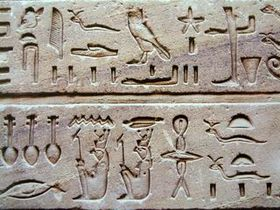

| Inventions |
Dates |
Utilisation |
images |
| L'écriture |
Vers 3200 avant J.C |
Communiquer entre eux à des fins militaire et commerciale |
 |
| Le calendrier égyptien |
Vers 2700 avant J.C |
Suivre les saisons et les inondations du Nil |
 |
| Le papier |
Vers 2400 avant J.C |
Pour l'écriture et les enregistrements |
 |
| Le chariot |
Vers 2000 avant J.C |
Elément crucial de leur puissance militaire et de leur commerce |
 |
| L'ancien dentifrice |
Vers 2000 avant J.C |
Faite à base de poudre de pumice, de coquilles d'oeufs broyées, de cendres et de myrrhe |
 |
| Obélidsques |
Vers 1800 avant J.C |
Ces monuments ont été utilisés à des fins religieuses et commémoratives |
|
| Les poids et mesures |
Vers 1600 avant J.C |
Ils ont développé un système de poids et mesures pour des transactions commerciales précises |
 |